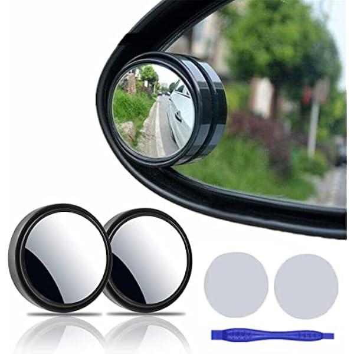
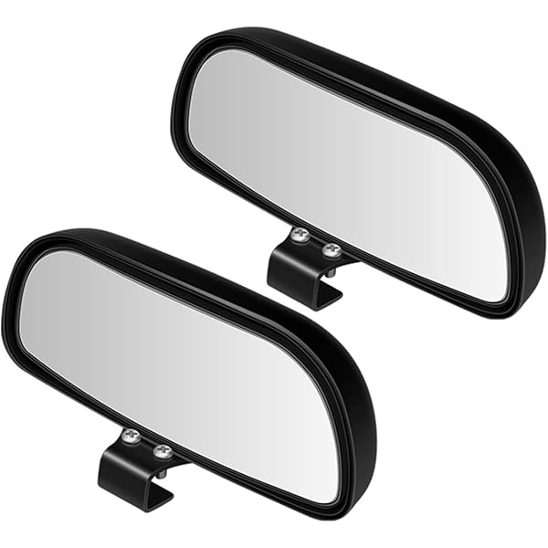
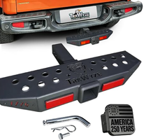

PRODUCT MANAGER REPORT / 2026-08-26
Weldon 2027 三级品类预算与品类规划
仅汇报产品经理为 Weldon汪昊 的产品。重点说明预算完成情况、三级品类结构、预算待补产品和两个新增类目的开发计划。
官方预算目标表RMB 口径与产品级 USD 规划分开展示
美国¥11.161M / ¥5.000M完成率 223.2%
非美¥1.041M / ¥5.000M缺口 ¥3.959M · 完成率 20.8%
CATEGORY BUDGET
本人三级品类预算情况
PM SUMMARY
产品经理汇报结论
01
预算补录优先于新增立项先让 19 个既有产品形成统一预算口径。
02
非美不能继续空转官方非美完成率仅 20.8%，Weldon 明细非美规划仅 $67.6K。
03
两个新类目单列盲点镜与拖车钩脚踏不再被镜子/脚踏大类掩盖。
CATEGORY STATUS
三级品类结构、预算与产品状态
| 产品 | 区域 | 上架 | 规划 GMV | 状态 |
|---|
NEW CATEGORY / BLIND SPOT MIRROR
盲点镜：不再做无差异通用款
市场有量但通用基础款已成熟。新品必须至少解决一个明确任务：更可靠粘接、更稳定视野，或形成车型专配壁垒。
市场月销额$996.9K
月销量样本98.9K
源表 27 年预算$19.8K
P0安装保障备用胶 + 清洁包作为所有新品共用底座。
P0F-150 OEM车型专配第一优先，RAM/Jeep 随后。
P1中尺寸椭圆与 D 形、宽矩形做同车视野 A/B。
STOP停止条件无可感知差异，或增加库存复杂度却不提升转化。


NEW CATEGORY / TOWING HITCH STEP
拖车钩脚踏：先统一首发口径



专项页的 $390.5K 产品池混入了 2028-2029 上架项目，不能直接作为 2027 预算。按真实上架年份重排后，2027 可执行组合为 $131.6K。
口径销量上架GMV
开发大表6602027.03$66.0K
专项 P04202027.04$42.0K
P02in 三合一孔位、防晃、承重与配件完整性先过关。
P1短双层脚踏计划 GMV $54.0K，2027.04 上架。
P2防盗 D 形环计划 GMV $35.6K，2027.11 上架。
BUDGET ACTION & TIMELINE
预算补充、开发动作与待确认事项
预算补充
优先补录脚踏 $682.3K、置物托盘 $212.9K、战术板 $129.8K，以及两个新类目预算。
Weldon + 运营｜9 月 15 日品类推进
已开发产品继续样品与质量闭环；13 个未立项产品逐个确认差异点、预算和上架节点。
不满足产品门槛则停止领导待确认
拖车钩脚踏采用 660 件/3 月还是 420 件/4 月口径；非美预算缺口由哪些品类承担。
影响预算和开发资源配置PROBLEM RECAP
问题统计与复盘
- 状态
- 待验证
- 当前判断
- 既有产品预算未闭环，新品池年度口径不统一。
- 已完成
- 完成负责人过滤、三级类目拆分、预算缺口测算与专项路线收敛。
- 下一步
- Weldon + 运营在 9 月 15 日前完成预算回填和首发口径确认。